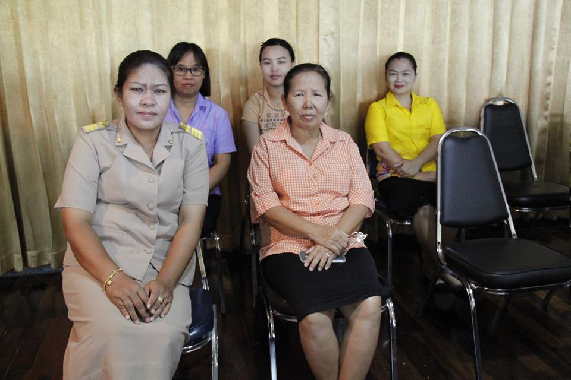
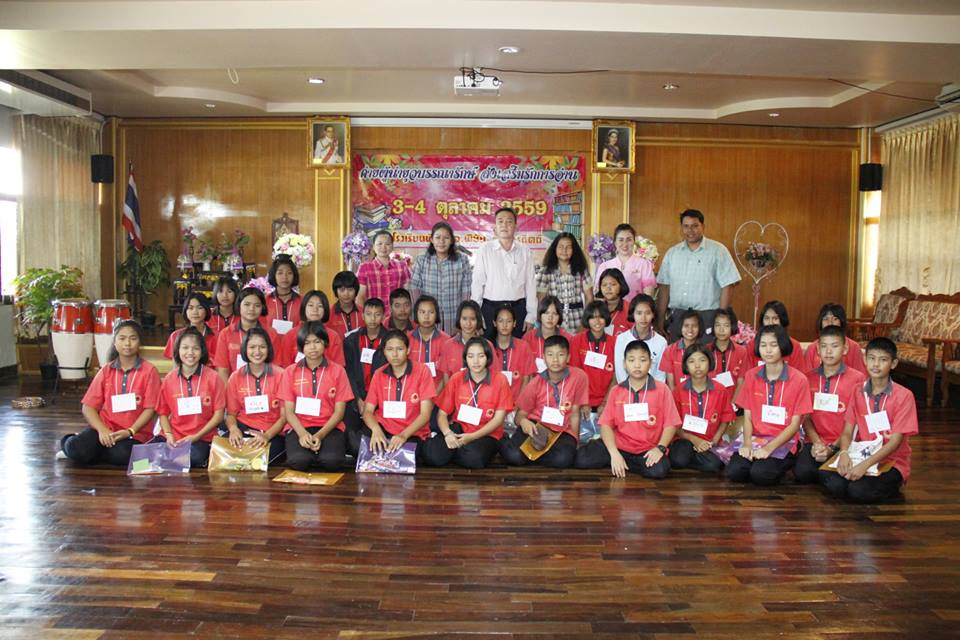

Performance Agreement Portfolio
Teaching and
Teaching and
Professional Activities
รวบรวมกิจกรรมการจัดการเรียนรู้และการพัฒนาตนเองทางวิชาชีพ เพื่อยกระดับคุณภาพการศึกษาและตอบสนองต่อเกณฑ์การประเมินวิทยฐานะ (PA)
Highlight
การจัดการเรียนรู้
โครงการพัฒนานวัตกรรมการเรียนรู้ Active Learning ในวิชาภาษาอังกฤษ
การจัดกิจกรรมการเรียนรู้ที่เน้นให้ผู้เรียนได้ลงมือปฏิบัติจริง โดยใช้กระบวนการคิดวิเคราะห์มาประยุกต์ใช้ในการสื่อสาร ผลลัพธ์ที่ได้คือผู้เรียนมีความมั่นใจในการใช้ภาษาเพิ่มขึ้นอย่างมีนัยสำคัญ
Seminar & Workshop
การอบรมเชิงปฏิบัติการพัฒนาสื่อการสอนดิจิทัล
การประยุกต์ใช้เทคโนโลยีเพื่อการสร้างสื่อการสอนที่มีประสิทธิภาพและลดภาระงานครู
2566

กิจกรรม PLCแลกเปลี่ยนเรียนรู้แนวทางการจัดการเรียนการสอน
การประชุมชุมชนแห่งการเรียนรู้ทางวิชาชีพเพื่อแก้ปัญหาทักษะการอ่านภาษาอังกฤษ

สื่อการสอนพัฒนาบทเรียนคอมพิวเตอร์ช่วยสอน (CAI)
สื่อการสอนมัลติมีเดียเพื่อกระตุ้นความสนใจของผู้เรียนในรายวิชาภาษาอังกฤษ
workspace_premium
ผลงานดีเด่น ประจำปี 2566
"ครูผู้สอนดีเด่น ด้านนวัตกรรมการศึกษา"